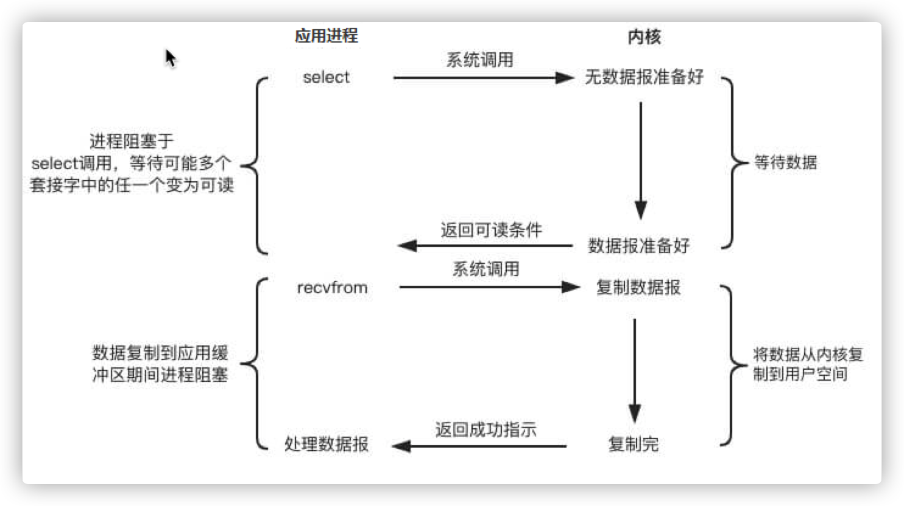
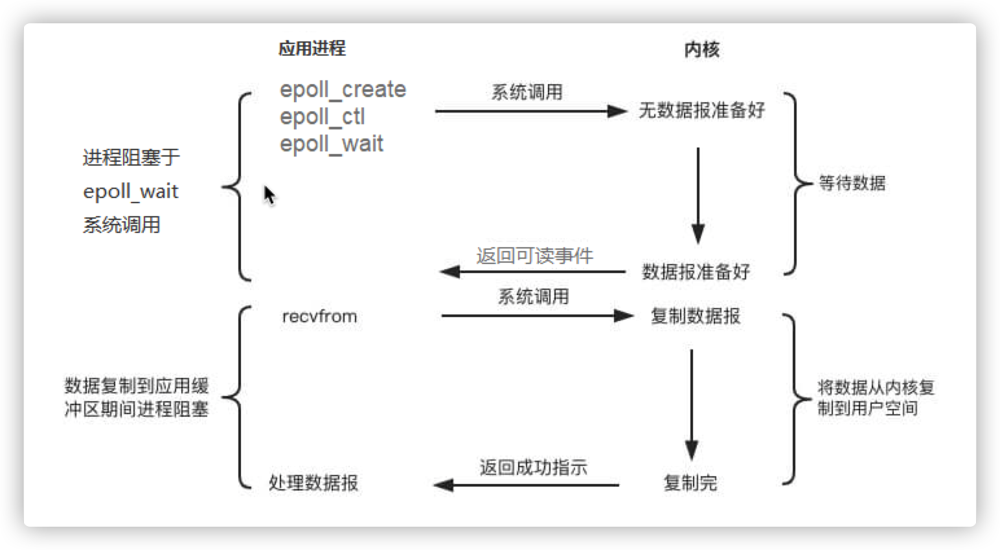

Java IO笔记
Java IO Java IO分类 IO指的是Input/Output，也就是输入和输出。
Input：从外部把数据读入内存。例如：硬盘、网络、USB等等。Output：从内存中把数据输出到外部。同样的，可以输出到硬盘、网络、USB等等。
从数据传输的方式来看，可以将IO分为字节流 和字符流 。Java中字节流以字节为单位传输数据，字符流则是以字符（根据编码的不同对应的字节也不同）为单位。
将字符转换为字节就称之为编码 ，反之称之为解码 。如果编码和解码使用了不同的编码方式，那么就会出现乱码 的情况。
从数据来源的角度来看，IO可以分为以下几类：
实战 File类 1 2 3 4 5 6 7 8 9 10 11 12 public void listAllFiles (File dir) throws Exception if (dir == null || !dir.exists()) { throw new Exception("input path is null or doesn't exist" ); } else if (dir.isFile()) { System.out.println(dir.getName()); } else { for (File f : dir.listFiles()) { listAllFiles(f); } } }
字节流类 1 2 3 4 5 6 7 8 9 10 11 public static void main (String[] args) throws IOException File file = new File("test.txt" ); InputStream is = new FileInputStream(file); StringBuilder sb = new StringBuilder(); int cnt; while ((cnt = is.read()) != -1 ) { sb.append((char ) cnt); } System.out.println(sb.toString()); }
以上代码可以完成对test.txt文件的读取。但是，这样效率太低，每次只从文件中读取一个字节，IO次数太多，效率低。所以可以用缓冲区一次多读一些字节。
1 2 3 4 5 6 7 8 9 10 11 12 public static void main (String[] args) throws IOException File file = new File("test.txt" ); InputStream is = new FileInputStream(file); byte [] buff = new byte [1024 ]; StringBuilder sb = new StringBuilder(); int cnt; while ((cnt = is.read(buff)) != -1 ) { sb.append(new String(buff, 0 ,cnt)); } System.out.println(sb.toString()); }
我们还可以利用BufferedInputStream继续优化。
1 2 3 4 5 6 7 8 9 10 11 12 public static void main (String[] args) throws IOException File file = new File("test.txt" ); InputStream is = new BufferedInputStream(new FileInputStream(file), 8192 ); byte [] buff = new byte [1024 ]; StringBuilder sb = new StringBuilder(); int cnt; while ((cnt = is.read(buff)) != -1 ) { sb.append(new String(buff, 0 ,cnt)); } System.out.println(sb.toString()); }
字符流类 1 2 3 4 5 6 7 8 9 10 public void readFileByLine (String path) throws Exception FileReader reader = new FileReader(path); BufferedReader br = new BufferedReader(reader); String line; while ((line = br.readLine()) != null ) { System.out.println(line); } br.close(); }
RandomAccessFile
RandomAccessFile虽然属于java.io下的类，但是它独立于字节流和字符流，可以对文件进行读和写。RandomAccessFile可以在文件的任意位置读写。通过seek()本地方法设置起始随机读取文件的位置，字节为单位。
通过length()本地方法返回文件的长度，字节为单位。
新建对象时要在构造函数中指定读写的方式：
r代表以只读的方式。rw代表以读写的方式。rws代表以读写的方式，同时对于内容和元数据都同步到存储设备。rwd代表以读写的方式，同时只同步对于内容的更新到存储设备上。
1 2 3 4 5 6 7 8 9 10 11 12 13 public void read () throws IOException RandomAccessFile file = new RandomAccessFile(new File("test.txt" ), "rw" ); byte [] buffer = new byte [1024 ]; file.seek(1 ); file.write("hello" .getBytes()); int cnt; while ((cnt = file.read(buffer)) != -1 ) { System.out.println(new String(buffer, 0 , cnt)); } }
Socket server
1 2 3 4 5 6 7 8 9 10 11 12 13 14 15 16 17 18 public class Server public static void main (String[] args) throws IOException ServerSocket server = new ServerSocket(8080 ); Socket socket; InputStream is; byte [] buff = new byte [1024 ]; int cnt; while (!Thread.currentThread().isInterrupted()) { socket = server.accept(); is = socket.getInputStream(); StringBuilder sb = new StringBuilder(); while ((cnt = is.read(buff)) != -1 ) { sb.append(new String(buff, 0 ,cnt)); } System.out.println(sb.toString()); } } }
client
1 2 3 4 5 6 7 8 9 public class Client public static void main (String[] args) throws IOException Socket socket = new Socket("localhost" , 8080 ); OutputStream os = socket.getOutputStream(); os.write("hello world" .getBytes()); os.close(); socket.close(); } }
URL 直接从URL中读取字节流数据。
1 2 3 4 5 6 7 8 9 10 public void readData (String path) throws IOException URL url = new URL(path); InputStream is = url.openStream(); InputStreamReader isr = new InputStreamReader(is, StandardCharsets.UTF_8); BufferedReader br = new BufferedReader(isr); String line; while ((line = br.readLine()) != null ) { System.out.println(line); } }
装饰器模式 装饰器模式允许向现有的对象添加额外的功能，而同时不改变其结构。
举例 创建一个Card接口，我们可以裁剪它。
1 2 3 public interface Card void cut () }
创建实现类：
1 2 3 4 5 6 7 public class Rect implements Card @Override public void cut () System.out.println("cut shape: rectangle" ); } }
1 2 3 4 5 6 7 public class Circle implements Card @Override public void cut () System.out.println("cut shape: circle" ); } }
创建抽象装饰类：
1 2 3 4 5 6 7 8 9 10 11 12 public abstract class ColorDecorator implements Card protected Card card; public ColorDecorator (Card card) this .card = card; } public void cut () card.cut(); } }
创建实体装饰类：
1 2 3 4 5 6 7 8 9 10 11 12 13 14 15 16 public class RedCardDecorator extends ColorDecorator public RedCardDecorator (Card card) super (card); } @Override public void cut () card.cut(); drawColor(card); } private void drawColor (Card card) System.out.println("draw color: red" ); } }
实例
1 2 3 4 5 6 7 8 9 10 11 12 13 public class Test public static void main (String[] args) Card card = new Card(); ColorDecorator redRect = new RedCardDecorator(new Rect()); ColorDecorator redCircle = new RedCardDecorator(new Circle()); System.out.println("make a red rectangle card" ); redRect.cut(); System.out.println("make a red circle card" ); redCircle.cut(); } }
IO装饰器 以InputStream为例，InputStream本身是抽象类，FileInputStream是InputStream的子类，提供了基于字节流的输入操作。而FilterInputStream就相当于抽象装饰类，其实现类例如DataInputStream、BufferedInputStream相当于具体的装饰类，为FileInputStream提供了额外的功能。例如前面提到的BufferedInputStream为FileInputStream提供了缓冲区的功能。
使用装饰器模式的好处是比继承更加灵活。继承是静态的，一旦使用继承所有的子类都会有一样的功能，而装饰器模式可以动态添加功能。而且装饰器模式更加容易复用，直接在原有对象套上一层装饰器对象即可。
同步/异步/阻塞/非阻塞 同步与异步 同步和异步指的是执行流程中一个方法是否要等到前一个方法执行完成后才能执行。同步的话一旦方法调用，就必须等到方法调用返回才能继续后续的流程；而异步不必等待，调用立即返回，继续后续的流程。也就是说异步执行方法会交给其他线程，不阻塞主线程。
同步和异步关注的是方法的执行线程是主线程还是其他线程。
阻塞与非阻塞 阻塞与非阻塞指的是单个线程内遇到同步等待时，是否待在原地不做任何操作。阻塞的话会一直待在原地等待同步方法执行完成。非阻塞的话不会待在原地，可以先去做其他操作，但要定期检查同步方法是否执行完成了。
阻塞和非阻塞关注的是线程是否会在原地等待同步方法。
Unix IO模型 为了了解Unix IO模型，需要先理解几个概念：
内核空间和用户空间 Linux系统的运行空间分为内核空间（Kernel space）和用户空间（User space），它们之间彼此隔离，因此我们遇到应用程序崩溃时也不用担心内核受损。
在内核空间中可以执行任何CPU指令，访问底层资源；但是用户空间中只能通过系统的接口才能向内核发送指令。
文件描述符 文件描述符（fd, File Descriptor），用于描述指向文件的引用的抽象概念。文件描述符是一个非负整数索引值，指向内核为每一个进程维护的本进程打开文件的记录表。每当应用程序新建或打开一个文件时，内核都会向该进程返回一个文件描述符。文件描述符是为了内核高效管理已被打开的文件，所有执行I/O的系统调用都会通过文件描述符。
Linux系统打开文件描述符的数量是有限制的，可以通过cat /proc/sys/fs/file-max查看，在/etc/sysctl.conf中可以通过fs.file-max=xxx修改。而进程也有自己的最大打开文件描述符，通过ulimit -n查看。该值是user limit中nofile的soft limit，不能大于hard limit。hard limt可以通过ulimit -Hn查看。我们可以用ulimit -Sn xxx临时修改soft limit。如果想要永久设置，要在/etc/security/limits.conf中修改。例如对于a用户：
1 2 a soft nofile xxx a hard nofile xxx
设置的hard limit不能大于/proc/sys/fs/nr_open的值。当然我们也可以修改nr_open的值：echo xxx > /proc/sys/fs/nr_open。
若要查看当前系统使用的文件描述符的数据，可以通过car /proc/sys/fs/file-nr查看。第一个值表示已分配使用的打开文件描述符数，第二个值表示分配后已释放的数，目前已不使用，第三个值等于file-max。
内核缓冲区 Linux存在缓存IO的机制，当进行input或者output时，数据会被先拷贝或读取到内核空间的缓冲区中，然后才会被写入到设备中或者拷贝到用户空间的缓冲区中。
5种模型 阻塞式I/O 阻塞式I/O简称BIO(Blocking IO)。
如下图，从应用程序调用recvfrom，到数据报到达并且被复制到应用程序的缓冲区或者发生错误（例如信号中断）的过程中，如果发起调用的线程一直处于等待的状态，那么它是阻塞式I/O。
BIO存在一个问题，如果内核的数据需要耗时比较久才能准备好，那么进程将长时间阻塞，浪费性能。
非阻塞式I/O 为了解决以上问题，引入了非阻塞式I/O，简称NIO(Non-Blocking IO)。
如下图，应用程序调用recvfrom等到内核接收到请求之后就立即返回，然后通过轮询 的方式反复调用，如果数据还没准备好，内核立即返回EWOULDBLOCK错误。直到数据报准备好了，进程阻塞，将数据从内核缓冲区拷贝到用户空间的缓冲区，然后进程继续后续的任务。应用程序发起系统调用的线程不会一直等待而是立即返回，这样的IO是非阻塞式IO。
NIO相对于BIO已经大幅提升了性能，但依然不是完美的，那就是因为轮询会消耗大量的CPU资源，而且大多数都是无效的系统调用。
IO多路复用 非阻塞式I/O的最大问题就是轮询导致大量的无效系统调用，于是有了IO多路复用这样的解决思路。
IO多路复用是一种机制，使得内核可以监视多个描述符，一旦一个或多个IO条件就绪（输入已准备好被读取，或者描述符已能承接更多输出），就会通知应用程序进行相应的读写操作。
select/poll select是内核提供的一个系统调用，监视的文件描述符有writedfs、readfds、exceptfds三类。
1 int select (int n, fd_set *readfds, fd_set *writefds, fd_set *exceptfds, struct timeval *timeout)
timeval用于指定超时时间的秒数或微秒数。
1 2 3 4 struct timeval { long tv_sec; long tv_usec; }
该参数有三种可能。
永远等待，仅在有一个描述符准备好了IO时才返回。这时我们应该把该参数设为空指针。
等待一段固定时间，在有一个描述符准备好了IO时返回，但是时间不超过设置的时间。
不等待，检查描述符之后即刻返回，也就是轮询。这时应该把该参数设置为0。
调用后select函数会阻塞，直到有文件描述符就绪或者超时，函数返回。当select返回后，内核会遍历fdset，找到就绪的描述符。所以select的时间复杂度为O(n)。
select的缺点是：
单个进程可监视的文件描述符数量是有限制的。在Linux中要求小于1024。
时间复杂度为O(n)，相当于内核采用了轮询，浪费CPU。
需要维护一个存放文件描述符的数据结构。每次调用select都要把这个数据结构从用户空间拷贝到内核空间，开销很大。
poll的本质和select是一样的，只是存放文件描述符的结构不同，用的是pollfd。
1 int poll (struct pollfd *fds, unsigned int nfds, int timeout)
pollfd其定义如下：
1 2 3 4 5 struct pollfd { int fd; short events; short revents; };
其大小没有限制。但同样的，poll在返回后内核同样要轮询找出就绪的描述符，并且同样有大量的拷贝操作。

总的来说，select/poll减少了应用程序发起的系统调用，但内核的工作并不会减少。在高并发的场景下，内核的性能问题依然存在。所以问题就是如何减少内核重复的遍历。
epoll epoll是在Linux 2.6内核中提出的，它没有描述符的限制。epoll使用一个文件描述符管理多个描述符，将用户关系的文件描述符的事件存放到内核的一个事件表中。
epoll过程有三个方法：
1 2 3 int epoll_create (int size ) int epoll_ctl (int epfd, int op, int fd, struct epoll_event *event) int epoll_wait (int epfd, struct epoll_event * events, int maxevents, int timeout)
int epoll_create(int size)：建立与内核的连接。创建一个epoll的句柄，参数size用来告诉内核监听的描述符数一共多大，它并不是限制了epoll所能监听的最大描述符数，只是对内核初始分配内部数据结构的建议。创建好句柄之后，它会占用一个fd，所以使用完epoll要调用close()关闭以免fd被耗尽。
int epoll_ctl(int epfd, int op, int fd, struct epoll_event *event)：注册事件，对指定fd执行操作。epfd是epoll_create的返回值，op则表示具体的操作，用三个宏表示：添加EPOLL_CTL_ADD，删除EPOLL_CTL_DEL，修改EPOLL_CTL_MOD，分别表示添加、删除和修改对fd的监听事件。fd表示监听的文件描述符。epoll_event表示告诉内核监听什么事，其结构如下：
1 2 3 4 struct epoll_event { __uint32_t events; epoll_data_t data; };
int epoll_wait(int epfd, struct epoll_event * events, int maxevents, int timeout)：等待IO事件，最多返回maxevents个事件。events从内核得到事件的集合，maxevents告诉内核events有多大，该值不能超过epoll_create(int size)的size值。timeout是超时时间，同select中的timeout参数类似。该函数返回需要处理的事件数目，如果为0表示已经超时了。
epoll对文件描述符的操作有两种模式：
LT(Level-Triggered)模式：当epoll_wait检测到描述符事件发生了会将此事件告知应用程序。如果应用程序没有处理该事件，下次再调用epoll_wait依然会告知应用程序。该模式是默认 模式。ET(Edge-Triggered)模式：当epoll_wait检测到描述符事件发生了会将此事件告知应用程序，但是只会告知一次，即使应用程序没有处理它，直到下一次该描述符上有了新的IO事件。这种模式效率高。
使用epoll，相对于select/poll的好处有：
相对select来说，没有监听的最大文件描述符的限制，它所支持的fd上限是最大可以打开文件的数目。Linux中通过cat /proc/sys/fs/file-max查看。
在select/poll中，内核需要对文件描述符进行线性扫描找出处于就绪状态的，而epoll通过注册文件描述符，使得一个fd就绪时，会自动回调，将就绪的fd放到rdlist中。当应用程序调用epoll_wait时会收到通知。所以epoll的时间复杂度是O(1)的。
只有调用epoll_ctl时才会把fd拷贝到内核空间，使用mmap加速内核空间与用户空间之间数据的传递。

但是epoll还是有缺陷的，那就是在数据准备阶段，用户进程是阻塞的。
信号驱动式IO 信号驱动式IO与BIO和NIO的区别在于，在数据准备的阶段，用户进程不会阻塞。
如下图，当应用程序发起一个IO请求，会给对应的socket注册一个信号函数，然后用户进程继续运行，不会阻塞。当内核中的数据准备好了，会发送一个SIGIO信号给用户线程，然后用户进程调用recvfrom将数据拷贝到用户空间，进行后续的操作。
相比于之前几种IO，信号驱动式IO解决了数据准备时用户进程阻塞的问题。但是最后拷贝数据时依旧是阻塞的。
异步IO 异步IO真正实现了IO流程全程非阻塞。
如下图，用户进程调用aio_read，无论内核数据有没有准备好，都会直接返回给用户进程。当socket数据准备好然后拷贝完成后，内核向进程发送通知。用户进程全程都是非阻塞的。
Java NIO 简介 Java NIO是Java 1.4之后新出的一套IO接口。它的特点有：
标准的IO编程接口是面向字节流和字符流的，而NIO是面向通道 和缓冲区 的。数据从通道中读取到缓冲区中，或者从缓冲区中写入到通道中。
使用同步非阻塞式IO。
使用selector，可以检测多个通道的事件状态，使得单线程可以操作多个通道的数据。
Channel Channel，通道。通过它可以读取、写入数据，相当于IO中的流。但不同的是：
Channel是双向传输的（NIO面向缓冲区），可以读可以写，而传统的IO操作是单向的。Channel可以异步读写。对Channel的读写要通过buffer。
buffer负责存储数据，Channel负责传输数据。
1 2 3 4 5 6 public interface Channel extends Closeable public boolean isOpen () public void close () throws IOException }
Java NIO中提供了几种Channel：
FileChannel：从文件中读取数据。DatagramChannel：读写UDP网络协议的数据。SocketChannel：读写TCP网络协议的数据。ServerSocketChannel：监听TCP连接。
Buffer Buffer，缓冲区，本质是一个数组，用于数据的读写。在Java中是一个抽象类，它包含四个属性：
1 2 3 4 private int mark = -1 ; private int position = 0 ; private int limit; private int capacity;
这四个属性不变的是mark <= position <= limit <= capacity。
还包含几个重要的方法：
1 2 3 4 5 6 7 8 9 10 11 12 13 14 15 16 17 18 19 20 21 22 23 24 25 26 27 28 29 30 31 32 33 34 35 36 37 38 39 40 41 42 43 44 45 46 47 48 49 50 51 52 53 54 55 56 57 58 public final Buffer limit (int newLimit) if ((newLimit > capacity) || (newLimit < 0 )) throw new IllegalArgumentException(); limit = newLimit; if (position > newLimit) position = newLimit; if (mark > newLimit) mark = -1 ; return this ; } public final Buffer reset () int m = mark; if (m < 0 ) throw new InvalidMarkException(); position = m; return this ; } public final Buffer clear () position = 0 ; limit = capacity; mark = -1 ; return this ; } public final Buffer flip () limit = position; position = 0 ; mark = -1 ; return this ; } public final Buffer rewind () position = 0 ; mark = -1 ; return this ; }
使用Buffer读写数据一般要经过以下几个步骤：
写入数据到Buffer。
调用flip()，切换到读模式。
从Buffer中读取数据。
调用clear()。
Java NIO主要提供了以下几种Buffer：
ByteBufferCharBufferDoubleBufferFloatBufferIntBufferLongBufferShortBuffer
直接缓冲区和非直接缓冲区
非直接缓冲区：在虚拟机内存中创建缓冲区，易回收，但是占用了虚拟机的内存，读写数据的时候需要复制。使用allocate()分配缓冲区。
直接缓冲区：在物理内存中申请一块空间，映射到内核空间和用户空间。这样读写数据时就不需要复制了，而是直接通过这块申请的空间。这种方式效率更高，但是创建和销毁空间开销比较大。使用allocateDirect()分配缓冲区。
实战 1 2 3 4 5 6 7 8 9 10 11 12 13 14 15 16 17 18 19 20 21 22 23 24 25 26 27 28 29 public void read () FileInputStream fis = new FileInputStream(new File("test.txt" )); FileChannel channel = fis.getChannel(); ByteBuffer byteBuffer = ByteBuffer.allocate(1024 ); int len; while ((len = channel.read(byteBuffer)) > 0 ) { byteBuffer.flip(); System.out.println(new String(byteBuffer, 0 , len)); byteBuffer.clear(); } channel.close(); fis.close(); } public void write () FileOutputStream fos = new FileOutputStream(new File("test.txt" ), true ); FileChannel channel = fos.getChannel(); ByteBuffer byteBuffer = ByteBuffer.allocate(1024 ); byteBuffer.put("hello nio" .getBytes()); byteBuffer.flip(); channel.write(byteBuffer); channel.close(); fos.close(); }
分散和聚集
分散读取：将通道中的数据分散到多个缓冲区中。
聚集写入：将多个缓冲区中的数据聚集到通道中。
1 2 3 4 5 6 7 8 9 10 11 12 13 14 15 16 17 18 19 public void readAndWrite () throws Exception FileInputStream fis = new FileInputStream(new File("test.txt" )); FileChannel channel1 = fis.getChannel(); ByteBuffer buffer1 = ByteBuffer.allocate(5 ); ByteBuffer buffer2 = ByteBuffer.allocate(5 ); ByteBuffer buffer3 = ByteBuffer.allocate(5 ); ByteBuffer[] buffers = {buffer1, buffer2, buffer3}; channel1.read(buffers); for (ByteBuffer bf : buffers) { bf.flip(); } FileOutputStream fos = new FileOutputStream(new File("test1.txt" ), true ); FileChannel channel2 = fos.getChannel(); channel2.write(buffers); channel1.close(); channel2.close(); }
字符集 字符集用于解决乱码的问题。
1 2 3 4 5 6 7 8 9 10 11 12 13 14 15 public void charset () throws IOException CharBuffer cb = CharBuffer.allocate(1024 ); Charset charset = StandardCharsets.UTF_8; CharsetEncoder encoder = charset.newEncoder(); CharsetDecoder decoder = charset.newDecoder(); cb.put("你好" ); cb.flip(); ByteBuffer bb = encoder.encode(cb); System.out.println(decoder.decode(bb)); }
通道间传输 1 2 3 4 5 6 7 8 9 10 public void transfer () throws IOException FileInputStream fis = new FileInputStream(new File("test.txt" )); FileChannel from = fis.getChannel(); FileOutputStream fos = new FileOutputStream(new File("test1.txt" )); FileChannel to = fos.getChannel(); long position = 0 , cnt = from.size(); from.transferTo(position, cnt, to); to.transferFrom(from, position, cnt); }
Selector Selector是NIO的组件。将通道全部注册到选择器上，选择器会监控通道的信息（连接、读、写等情况）。当某一通道，某一事件就绪时，选择器会把这个通道分配到服务器的一个或多个线程上。
使用Selector的好处是可以使用更少的线程去处理通道，减少了线程之间的切换带来的开销。
1 2 3 4 5 6 7 8 9 10 Selector selector = Selector.open(); SocketChannel channel = SocketChannel.open(); channel.configureBlocking(false ); channel.connect(new InetSocketAddress("localhost" , 8080 )); SelectionKey key = channel.register(selector, SelectionKey.OP_READ);
SelectionKey有四个常量，代表了不同的监听类型：
SelectionKey.OP_READ：读SelectionKey.OP_WRITE：写SelectionKey.OP_CONNECT：连接SelectionKey.OP_ACCEPT：接收
1 2 3 4 public static final int OP_READ = 1 << 0 ;public static final int OP_WRITE = 1 << 2 ;public static final int OP_CONNECT = 1 << 3 ;public static final int OP_ACCEPT = 1 << 4 ;
对于客户端的SocketChannel，支持读、写、连接三个操作；而服务端的ServerSocketChannel只支持接收操作，accept()方法产生的SocketChannel只支持读和写操作。
如果想要监听多种事件，可以使用或 运算进行组合，例如：SelectionKey.OP_READ | SelectionKey.OP_WRITE。
Selector中还有几个重要的方法：
1 2 3 4 5 6 7 8 9 10 11 12 13 public abstract Set<SelectionKey> keys () public abstract Set<SelectionKey> selectedKeys () public abstract Selector wakeup () public abstract void close () throws IOExceptionpublic abstract int select () throws IOExceptionpublic abstract int select (long timeout) throws IOExceptionpublic abstract int selectNow () throws IOException
SelectionKey 之前注册通道到Selector上返回了SelectionKey对象，它主要包含了以下几种属性和方法：
1 2 3 4 5 6 7 8 9 10 11 12 13 14 15 16 17 18 19 20 21 22 23 24 25 26 27 28 29 30 public abstract SelectableChannel channel () public abstract Selector selector () public abstract int interestOps () public abstract SelectionKey interestOps (int ops) public abstract int readyOps () public final boolean isReadable () return (readyOps() & OP_READ) != 0 ; } public final boolean isWritable () return (readyOps() & OP_WRITE) != 0 ; } public final boolean isConnectable () return (readyOps() & OP_CONNECT) != 0 ; } public final boolean isAcceptable () return (readyOps() & OP_ACCEPT) != 0 ; } public abstract boolean isValid () public abstract void cancel ()
非阻塞Socket通信 非阻塞server 1 2 3 4 5 6 7 8 9 10 11 12 13 14 15 16 17 18 19 20 21 22 23 24 25 26 27 28 29 30 31 32 33 34 35 36 37 38 39 40 41 42 43 44 45 46 47 48 49 50 51 52 53 54 55 56 57 58 59 60 61 62 63 64 65 66 67 68 69 70 71 72 73 74 75 76 77 78 79 80 81 82 83 public void server () throws IOException ServerSocketChannel channel = ServerSocketChannel.open(); channel.configureBlocking(false ); channel.bind(new InetSocketAddress(8080 )); Selector selector = Selector.open(); channel.register(selector, SelectionKey.OP_ACCEPT); while (selector.select() > 0 ) { Iterator<SelectionKey> iterator = selector.selectedKeys().iterator(); while (iterator.hasNext()) { SelectionKey key = iterator.next(); if (key.isAcceptable()) { ServerSocketChannel serverSocketChannel = (ServerSocketChannel) key.channel(); SocketChannel socketChannel = serverSocketChannel.accept(); socketChannel.configureBlocking(false ); socketChannel.register(selector, SelectionKey.OP_READ); } else if (key.isValid() && key.isReadable()) { SocketChannel readChannel = null ; System.out.println("开始读取" ); try { readChannel = (SocketChannel) key.channel(); readChannel.configureBlocking(false ); StringBuilder sb = new StringBuilder(); ByteBuffer bb = ByteBuffer.allocate(1024 ); int cnt; while ((cnt = readChannel.read(bb)) > 0 ) { bb.flip(); sb.append(new String(bb.array(), 0 , cnt)); bb.clear(); } System.out.println(sb.toString()); System.out.println("读取完毕" ); key.interestOps(key.interestOps() | SelectionKey.OP_WRITE); if ((readChannel.read(bb)) == -1 ) { System.out.println("客户端断开连接" ); key.cancel(); try { readChannel.close(); } catch (IOException e) { e.printStackTrace(); } } } catch (IOException e) { System.out.println("异常关闭" ); key.cancel(); try { readChannel.close(); } catch (IOException e1) { e1.printStackTrace(); } } } else if (key.isValid() && key.isWritable()) { System.out.println("开始写" ); try (SocketChannel writeChannel = (SocketChannel) key.channel()) { writeChannel.write(ByteBuffer.wrap("收到" .getBytes())); System.out.println("写完了" ); key.interestOps(key.interestOps() & ~SelectionKey.OP_WRITE); } catch (Exception e) { e.printStackTrace(); } } iterator.remove(); } } }
非阻塞client 1 2 3 4 5 6 7 8 9 10 11 12 13 14 15 16 17 18 19 20 21 22 23 24 25 26 public void client () throws IOException, InterruptedException SocketChannel socketChannel = SocketChannel.open(new InetSocketAddress("localhost" , 8080 )); socketChannel.configureBlocking(false ); System.out.println("开始发送数据" ); ByteBuffer sendbuffer = ByteBuffer.allocate(1024 ); sendbuffer.put(("Hello " + new Date()).getBytes()); sendbuffer.flip(); socketChannel.write(sendbuffer); sendbuffer.clear(); System.out.println("从服务端接收数据!" ); ByteBuffer readBuffer = ByteBuffer.allocate(1024 ); StringBuilder sb = new StringBuilder(); int cnt = 0 ; while ((cnt = socketChannel.read(readBuffer)) > 0 ) { readBuffer.flip(); sb.append(new String(readBuffer.array(), 0 , cnt)); readBuffer.clear(); } System.out.println(sb.toString()); System.out.println("关闭客户端！" ); socketChannel.close(); }
Pipe Java NIO管道是两个线程之间的单向数据连接。一个Pipe有一个sink channel和一个source channel。把数据写到sink channel，然后从source channel读取。
1 2 3 4 5 6 7 8 9 10 11 12 13 14 15 16 17 18 19 20 21 public void pipe () throws IOException Pipe pipe = Pipe.open(); Pipe.SinkChannel sinkChannel = pipe.sink(); ByteBuffer byteBuffer = ByteBuffer.allocate(1024 ); byteBuffer.put("Hello Pipe" .getBytes()); byteBuffer.flip(); sinkChannel.write(byteBuffer); Pipe.SourceChannel sourceChannel = pipe.source(); byteBuffer.flip(); int cnt = sourceChannel.read(byteBuffer); System.out.println(new String(byteBuffer.array(), 0 , cnt)); sinkChannel.close(); sourceChannel.close(); }